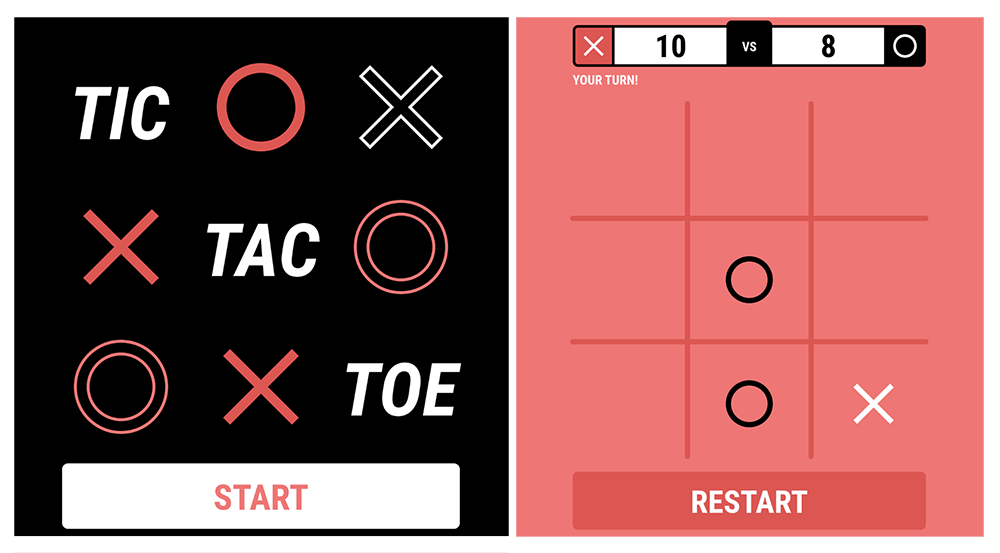

JS地下城：8F-井字遊戲

規則
- 【特定技術】先手為 O，後手為 X，某方獲勝時，上方會紀錄各方的獲勝戰績
- 【特定技術】每回合結束後，會判定結果頁(平手、Ｏ 獲勝、X 獲勝)
- 【特定技術】需符合 RWD，能在低螢幕解析度也能遊玩，介面不能超出 x 軸，至少在以下解析度能夠遊玩。
iPhone SE 320px
iPhone 8 375px
iPhone PLUS 414px - 【特定技術】請使用瀏覽器離線儲存技術，將戰績保留起來，重新打開遊戲也仍可觀看到歷史戰績。技術請任選以下幾種
Cookie
localStorage
這次使用 vue 挑戰此次的關卡
css 外框字
文字陰影方式(text-shadow)
此為最常見的一種方式
1 | text-shadow: -5px 5px #fff, 5px 5px #fff, 5px 5px #fff, 5px -5px #fff; |
css3(text-stroke)
有了 css3 後 可直接畫出外框字
1 | -webkit-text-stroke: 5px #fff; |
思維
初始值 全部都是歸 0
開始遊戲後
O 的這一方 +1
X 的這一方 -1
連上一條線後 總數 = 3 時 代表 O 方獲勝 反之 =-3 則 X
如果到最後一步 都沒出現 3 這個值 就是平手
程式開始
這個遊戲加起來總共有八條線可以連
所以設計出了以下這個陣列
ps.個人龜毛了些 所以從 1 開始算
1 | watch:{ |
由 watch 監控 每走一步就計算一次，當有連成一直線時 就會直接跳到勝利畫面
如下(總覺得這串程式碼 應該可以再更優化些!)
1 | computed:{ |
localStorage 紀錄戰績
這裡我選用 localStorage 來紀錄戰績
下面是 Cookie 與 localStorage 的比較
他們的共同點都是保存在瀏覽器裡面
| 特性 | Cookie | localStorage |
|---|---|---|
| 生命週期 | 可以設定到期時間，如果是由瀏覽器自動產生的 cookie 的話，則瀏覽器關掉後就失效了 | 不會過期，除非手動清除(localStorage.clear()) |
| 存放大小 | 4KB | 5MB |
| http 請求 | 主要是用於 server 端 但保存過多的資料會帶來效能上的問題 | 主要用於本地端(即瀏覽器)中保存 |
| 易用性 | 需要自己封裝程式碼 較不方便 | 原生的 function 就能使用的 也可以再次封裝對 object 跟 array 支援度較高 |
闖關過程大約就是這樣了 程式碼部份可以到我的sourse code上看囉
感謝您看到這裡
若是對我的文章 或是 程式碼方面有任何問題的話 也請多多指教!
Donate
如果這整篇文章有幫助到你的話 也歡迎請我喝杯飲料 ^_^